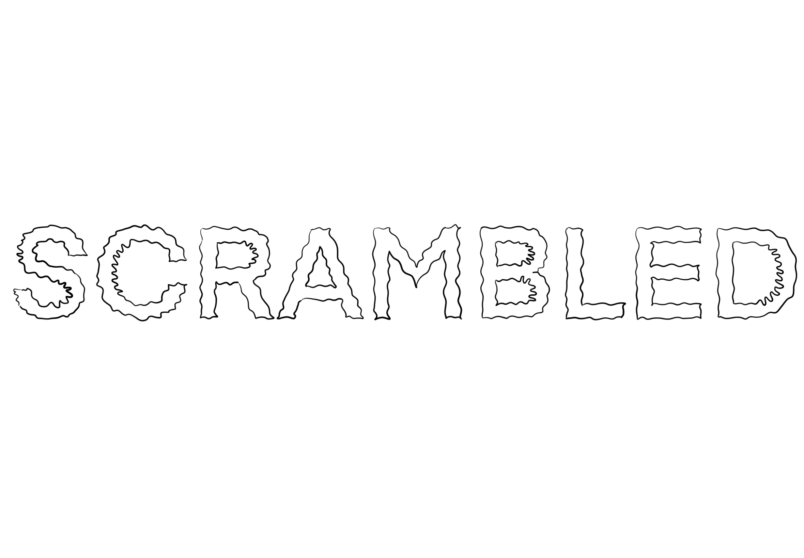

1
2
3
Short days and long nights, catching up with friends is not the same, a glimpse into the past life like looking through a window. Sleeping in a room that isn’t mine anymore, with someone who doesn’t belong inside these four walls. He knows all the stories but it's not a book, it’s my life. Was my life. He looks at it through a window. I changed but home hasn’t. An old part of my brain got unlocked, like lights turned on in a dark room. Another personality creeps out. The routine is back. work, dinner, drinks, repetitive music, dancing, sweating, back to work. He doesn’t understand it but I do, even though it is getting more alien. Next stop next home. More short days and long nights, different friends different accent diffrent light turned on. Hard to show a misunderstood place. He likes baked beans and hash browns. I like him. I can’t stand still so i immediately sprint. Home is standing still and I am happy I am not.
AHhhhhhhhhhhhhhhhhh my brain is
